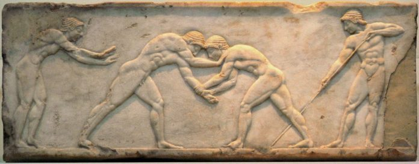

Ancient Olympic Games 
Hymns that rule the lyre, what god, what hero, and what man shall we celebrate? Indeed, Pisa belongs to Zeus, while Herakles established the Olympic festival as the firstfruits of the war; but Theron, because of his victorious four-horse chariot, must be proclaimed...
Pindar-Olympian Odes (For Theron of Akragas, winner chariot race, 476 B.C.)
The ancient civilization of Greece was located in southeastern Europe, surounded by Ionian, Mediteranean and Aegean seas. Geographical formations included mountains, seas, and islands, which formed natural barriers between the Greek city-states and forced the Greeks to settle along the coast. Despite their differences and fierce competition, the city-states developed local games into national Panhellenic games. The games helped to unite all Greeks and strengthen the common Greek language, consciousness and identity.
"Panhellenic Games" is the collective term for four separate sports festivals held in ancient Greece. The four Games were:
| Games | God Honored | Location | Prize | Frequency |
|---|---|---|---|---|
| Olympic Games | Zeus | Olympia | Olive Wreath | Every 4 years |
| Pithian Games | Apollo | Delphi | Laurel | 2 years after Olympic Games (2 years after the Olympic Games) |
| Nemean Games | Zeus | Nemea | Wild Celery | Every 2 years (2nd and 4th year of Olympiads) |
| Isthmian Games | Poseidon | Isthmia | Pine | Every 2 years (year before and year after Olympiad) |
The Olympiad was one of the ways the ancient greeks measured time. The Olympic Games were used as a starting point, year one of the cycle; the Nemean and Isthmian Games were both held (in different months) in year two, followed by the Pythian Games in year three, and then the Nemean and Isthmian Games again in year four. The cycle then repeated itself with the Olympic Games. They were structured this way so that individual athletes could participate in all of the games.
Participants could come from all over the Greek world, including the various Greek colonies from Asia Minor to Spain. However, participants probably had to be fairly wealthy in order to pay for training, transportation, lodging, and other expenses. Neither women nor non-Greeks were allowed to participate, except for very occasional later exceptions, such as the Roman emperor Nero.
The main events at each of the games were chariot racing, wrestling, boxing, pankration, stadion and various other foot races, and the pentathlon (made up of wrestling, stadion, long jump, javelin throw, and discus throw). Except for the chariot race, all the events were performed nude.
The Olympic Games were the oldest of the four, said to have begun in 776 BC. It is more likely though that they were founded sometime in the late 7th century BC. They lasted until the Roman Emperor Theodosius, a Christian, abolished them as heathen in AD 393. The Pythian, Nemean and Isthmian games most likely began sometime in the first or second quarter of the 6th century BC. The Isthmian games were held at the temple to Poseidon on the Isthmus of Corinth.
The games are also known as the stephanitic games, because winners received only a garland for victory. (Stephanitic derives from stephanos the Attic Greek word for crown.) No financial or material prizes were awarded, unlike at other ancient Greek athletic or artistic contests, such as the Panathenaic Games, at which winners were awarded many amphorae of first-class Athenian olive-oil. The Olympic games awarded a garland of olives; the Pythian games, a garland of laurel, i.e. bay leaves; the Nemean games, a crown of wild celery, and the Isthmian, a garland of pine leaves in the archaic period, one of dried celery in the Classical and Hellenistic periods, and again one of pine from then on. Though victors received no material awards at the games, they were often showered with gifts and honors on returning to their polis. (Wikipedia)

Olympia
Temple of Zeus
Delphi
Temple of Apollo

Nemea
Temple of Nemean Zeus

Isthmia
Temple of Poseidon